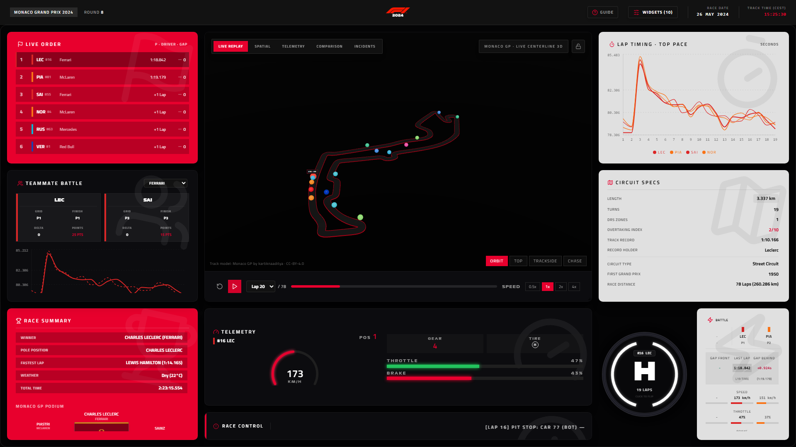
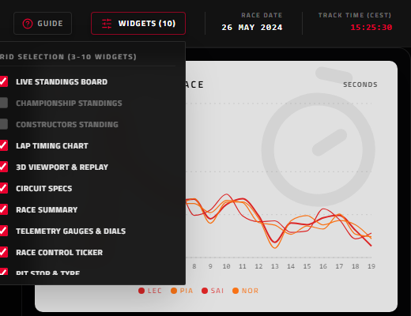
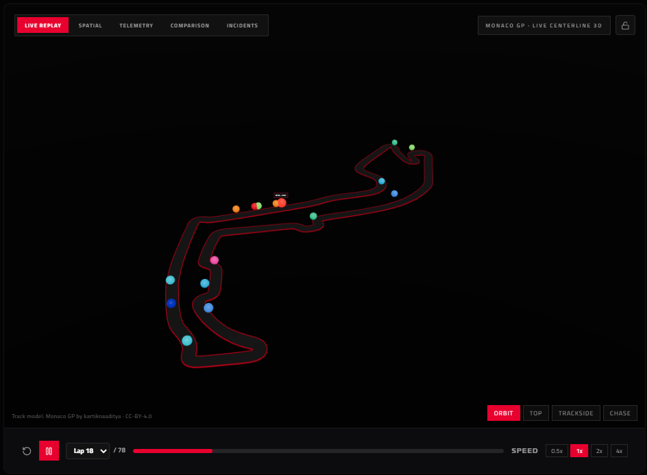
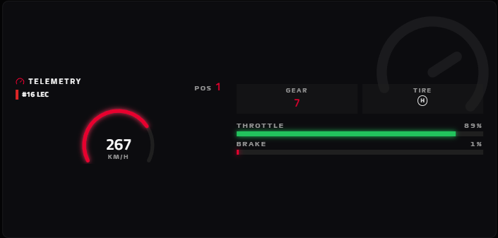

This presentation breaks down the inner workings of the F1 Live Telemetry & 3D Race Dashboard from a designer's perspective. Learn the technical keywords, layout algorithms, and state architectures that bring this project to life.

Just like design requires Figma (editor), variable modes (rules), and file exporting, coding requires a library, constraints, and a compiler.
Designer equivalent: Figma Components. Rather than copying layouts, we code small, reusable components (like cards or dials) and stitch them together to make a unified interface.
Designer equivalent: Variable constraints. Prevents errors by ensuring data types always match (e.g., locking a lap input field to only accept numbers, preventing text from breaking layouts).
Designer equivalent: PDF/HTML Export. Compresses and packages the modular code directories, icons, fonts, and CSS into a single flat file that runs standalone anywhere.
React-Grid-Layout: Maps our dashboard to a strict 8-column by 12-row coordinate plane.
Backtracking Solver: A custom logic script (`packAndFillLayout`) that resolves collisions. When a card is dragged or resized, it dynamically tests coordinates, varying card heights to fit perfectly.
Result: Zero gaps or overlapping cards on screen, satisfying strict layout rules.


How do we coordinate 20 cars traveling at 300 km/h with charts and dials?

Acts as the single source of truth. It stores the active frame, driver selections, and playbacks. When the timer moves, it notifies all cards simultaneously.
Design equivalent: **Figma Smart Animate**. Calculates where cars are in the fractions of a second between recorded telemetry frames, ensuring smooth car transitions on map and speedometer.
React Three Fiber (R3F): A React library that wraps WebGL and Three.js. Allows us to declare cameras, directional lights, and F1 track mesh models as simple component nodes.
OrbitControls: Captures click-and-drag mouse events to map camera movement. Lets you orbit, zoom, and pan around the model of Monaco dynamically.